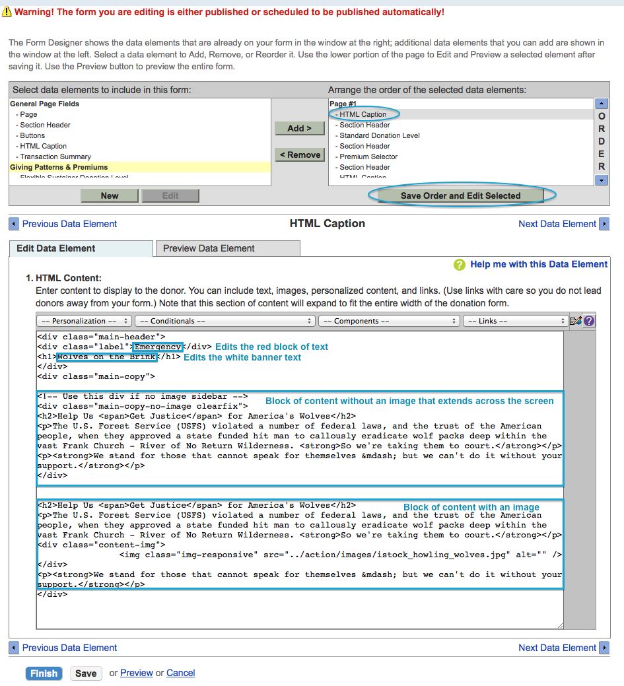

DOW_Resp_Forms
Documentation on how to replicate the new 2014 DOW action and donation forms
Action Alerts
Example Actions & Thank You Page Redirects:
- 2015 Wolf - 2015_Alert_Thank_You_Wolf
- 2015 Polar Bear - 2015_Alert_Thank_You_Polar_Bear
Page Wrappers Used:
- 2015 Action & TY Wolf
- 2015 Action & TY Polar Bear
Duplicating an Action Alert
- There are two example action alerts that can be duplicated for production (2015 Wolf and 2015 Polar Bear).
- The Action Alert redirects to Thank You Pagebuilder pages upon completion (2015_Alert_Thank_You_Wolf and 2015_Alert_Thank_You_Polar_Bear).
- Both the action alerts and the pagebuilder thank you pages use the same page wrapper (2015 Action & TY Wolf and 2015 Action & TY Polar Bear).
Creating a New Action Alert Template (new animal banner)
If you want to create a new version (e.g. new animal banner), you must duplicate the page wrapper and replace the banner image in two places.
1. Click Setup > Page Wrapper Editor > Search 2015 Action & TY > Duplicate one of wrappers (2015 Action & TY Wolf or 2015 Action & TY Polar Bear) > Name it with a description of the new banner.  2. Next, go to the most recently published version (to check this you can sort by last modified on the wrapper you copied from) and edit the version.
3. Go to step 4. HTML Body. Here, you will replace the url of the new banner image (1100x288) in the two highlighted locations below. Keep in mind that when the banner is resized for tablet/mobile, the right half of the image is used. Make sure the banner is designed appropriately.
2. Next, go to the most recently published version (to check this you can sort by last modified on the wrapper you copied from) and edit the version.
3. Go to step 4. HTML Body. Here, you will replace the url of the new banner image (1100x288) in the two highlighted locations below. Keep in mind that when the banner is resized for tablet/mobile, the right half of the image is used. Make sure the banner is designed appropriately.  4. Publish the version of the wrapper.
5. Go to the edit section of the Action Alert and Thank You Page Builder page you wish to apply this new banner to, click 9. Design Alert and update the page wrapper in step 1. Please note that if you do not see the wrapper you just created, you may have to log out of convio and then log back in for the wrapper to appear.
4. Publish the version of the wrapper.
5. Go to the edit section of the Action Alert and Thank You Page Builder page you wish to apply this new banner to, click 9. Design Alert and update the page wrapper in step 1. Please note that if you do not see the wrapper you just created, you may have to log out of convio and then log back in for the wrapper to appear.
Donation Forms
Example Donation Forms in campaign TEST RESPONSIVE DONATION FORM:
- 2015 TEG - Generic Donate Now - 16441
- 2015 TEG - Wolves on the Brink Banner - 16440
- 2015 TEG - New Polar Bear Banner - 16401
- 2015 TEG - New Wolf Banner - 16400
Page Wrappers Used:
- 2015 Donate Now - Generic
- 2015 Donate Now - Wolves on the Brink
- 2015 Donate Now - Polar Bear
- 2015 Donate Now - New Wolf
Duplicating a Donation Form
- There are four example donation forms that can be duplicated for production (listed above).
- Pick one that you would like to use for production and click "copy". First name the form, then make sure you add the form to the campaign you want the form to reside. Select "Responsive" for option 3 and then click finish.
- In order to update the text on the banner and on the form, click "3. Design Fonor Screens" and edit the donation form. On the right hand side of the data elements, select the "HTML Caption" and click "Save Order and Edit Selected". 
- To update the text on the banner and page of the Thank You landing page. Click "3. Design Donor Screens" and edit the Thank You Page.